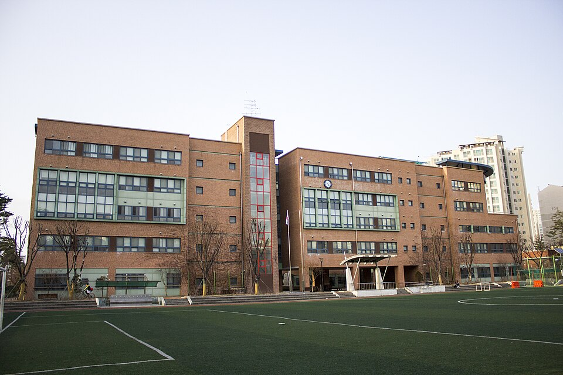

강동구는 지금 서울에서 학생 이동이 가장 큰 지역입니다. 고덕·강일 재건축 단지에 젊은 가족이 계속 들어오면서 고덕중·강일중·강일고 학생이 늘고 있고, 명일동의 한영고·한영외고·명일여고와 둔촌동 배재고·둔촌고는 예전부터 내신 경쟁이 센 학교들입니다. 학원가는 명일·천호에 몰려 있어서 고덕·강일·암사 쪽은 방문 수업 수요가 큽니다.
오늘은 강동구에 직접 찾아가는 선생님 중 두 분을 소개합니다. 한 분은 고3 이과까지 보는 수학·물리 전문, 한 분은 문법·내신을 잡아 주는 영어 선생님입니다.
① 정ㅇ영 선생님 — 수학·물리, 고3 이과 전문
정ㅇ영 선생님 남선생님
물리학 전공에 수능 수학 1등급 출신으로, 고3 이과 수학과 물리를 같이 볼 수 있는 흔치 않은 조합입니다. 고1까지는 통합과학 전체를 다루니, 이과를 생각하는 중등·고1 학생이 수학과 과학을 한 흐름으로 준비하기 좋습니다.
상위권 학생을 여럿 관리해 온 만큼 입시까지 이어지는 코칭이 되고, 시간 약속이 철저해 학부모님 신뢰가 두터운 선생님입니다. 한영고·배재고처럼 이과 내신이 치열한 학교의 고학년에게 특히 맞습니다.
정ㅇ영 선생님 상세 프로필 →② 최ㅇ정 선생님 — 영어 문법·내신, 고덕·명일·둔촌·천호 방문
최ㅇ정 선생님 여선생님
초5부터 고1까지, 문법과 교과서 내신에 집중하는 영어 선생님입니다. 문장의 뼈대를 세우고 스스로 끊어 읽기·직독직해가 되도록 훈련시키는 방식이라, 중학교 내신에서 문법 문항을 자꾸 틀리는 학생에게 잘 맞습니다.
꼼꼼하고 정확한 피드백으로 동기를 붙여 주는 친근한 선생님이라, 영어가 싫어진 학생이 다시 페이스를 잡는 데 강합니다. 고덕중·명일중·둔촌중·천일중 학생이 집 가까이에서 평일에 받기 좋은 동선입니다.
최ㅇ정 선생님 상세 프로필 →어떤 선생님이 우리 아이에게 맞을까
- 이과 지망, 수학·물리를 고3까지 한 분에게 — 정ㅇ영 선생님. 강일·명일·고덕·상일 방문, 그 외 화상.
- 초등 고학년~중등, 영어 문법·내신을 차근차근 — 최ㅇ정 선생님. 고덕·명일·둔촌·천호·암사 평일 방문.
- 고2 이상 영어나 국어·사회는 강동구 전체 선생님에서 화상 수업 포함으로 찾아드립니다. 방문 선생님이 10명 있습니다.

강동구 학교별 과외 안내
학교마다 시험 출제 경향과 수행평가 비중이 달라서, 학교별로 준비법을 따로 정리해 두었습니다.
- 고덕중학교 과외 · 명일중학교 과외 · 강명중학교 과외 · 강일중학교 과외
- 둔촌중학교 과외 · 천일중학교 과외 · 천호중학교 과외 · 성내중학교 과외
- 한영고등학교 과외 · 한영외고 과외 · 명일여고 과외
- 배재고등학교 과외 · 둔촌고등학교 과외 · 강일고등학교 과외 · 선사고등학교 과외
👉 강동구 관리 학교 33곳 전체와 방문 가능 선생님 보기